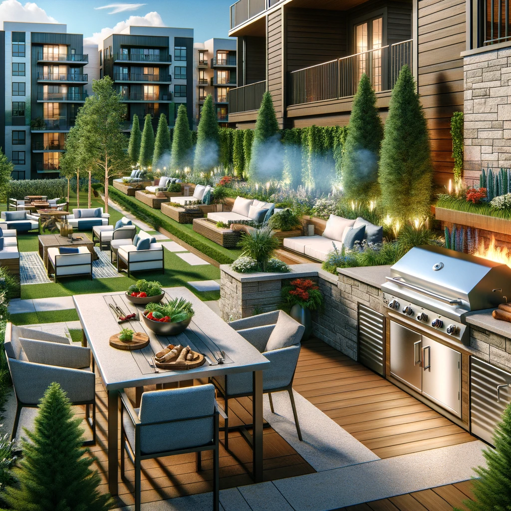

Apex Living Spaces
Welcome to "Apex Living Spaces," where luxury meets convenience in the heart of the city. Our community offers a range of floor plans designed to suit your lifestyle, complemented by top-tier amenities that redefine apartment living. Explore what makes "Apex Living Spaces" not just a place to live, but a place to thrive. At "Apex Living Spaces," we've thought of everything to ensure that your home is not just a place to live, but a place to thrive. Our attentive on-site management and maintenance teams are dedicated to providing an unparalleled living experience, one that is as seamless as it is luxurious. Whether you're drawn to the dynamic city life or the comfort of a high-end residence, "Apex Living Spaces" offers the perfect backdrop to craft your ideal lifestyle. Our apartments are designed with the modern urbanite in mind, featuring open-concept layouts, floor-to-ceiling windows that invite natural light, and private balconies that offer breathtaking city views. Kitchens are equipped with sleek, energy-efficient appliances, custom cabinetry, and quartz countertops, while spa-inspired bathrooms boast rain showerheads and deep soaking tubs.
 For those who seek adventure beyond the city, our location offers easy access to bike paths, parks, and waterways, perfect for weekend escapes into nature. At "Apex Living Spaces," community events and workshops foster a sense of belonging, creating not just a residence but a dynamic, supportive community. "Apex Living Spaces" isn't just about the luxury inside your apartment; it's about creating a lifestyle where convenience, community, and comfort converge. Here, every detail, from pet-friendly policies to secure parking, has been curated to enhance your living experience, making "Apex Living Spaces" the ultimate destination for those who demand the very best in urban living.
For those who seek adventure beyond the city, our location offers easy access to bike paths, parks, and waterways, perfect for weekend escapes into nature. At "Apex Living Spaces," community events and workshops foster a sense of belonging, creating not just a residence but a dynamic, supportive community. "Apex Living Spaces" isn't just about the luxury inside your apartment; it's about creating a lifestyle where convenience, community, and comfort converge. Here, every detail, from pet-friendly policies to secure parking, has been curated to enhance your living experience, making "Apex Living Spaces" the ultimate destination for those who demand the very best in urban living.

The heart of our community beats in the shared spaces designed for relaxation, work, and play. A rooftop terrace provides a serene escape with panoramic views, green spaces, and outdoor cooking areas. The state-of-the-art fitness center caters to all levels of health and wellness enthusiasts, and our co-working spaces offer the flexibility to blend lifestyle and work seamlessly. Nestled in a vibrant neighborhood, "Apex Living Spaces" puts you within walking distance of gourmet restaurants, trendy cafes, and boutique shopping. Cultural enthusiasts will appreciate the proximity to galleries, theaters, and music venues, ensuring there's always something exciting to explore.